OKW30
- קיבולת כף
- 0.1 m³
- הספק מנוע
- 22.1 kW
- עומק חפירה מרבי
- 2,500 mm
קטלוג טכני · 2026
חפשו, סננו ובחרו דגם כדי לראות פרטים מלאים. כל הנתונים מגיעים ממסמכי היצרן המאושרים של LOVOL ו־NICOSAIL.
הנתונים והתמונות מגיעים מקטלוגי היצרנים. הם אינם מהווים אישור למחיר, מלאי, זמן אספקה, אחריות או תצורה מסוימת. היצרנים מציינים שמפרטים ועיצוב עשויים להשתנות ללא הודעה, ושיש לאמת את פרטי הכלי בפועל לפני הזמנה.
מסמכי היצרן עלולים להיות גדולים. פתחו לצפייה באותו חלון, ואם התצוגה לא נטענת בחרו הורדה למכשיר.
לא מצאנו דגם תואם. אפסו את החיפוש והמסננים כדי לחזור לכל הדגמים.
ההכוונה מציעה משפחת ציוד לפי סוג המשימה. את ההתאמה להיקף העבודה, לתנאי השטח ולקצב העבודה מאמתים מול מפרט היצרן.
דגמים קומפקטיים לעבודות פיתוח, תעלות, גינון, תשתיות ואתרים עם מרחב תמרון מוגבל.


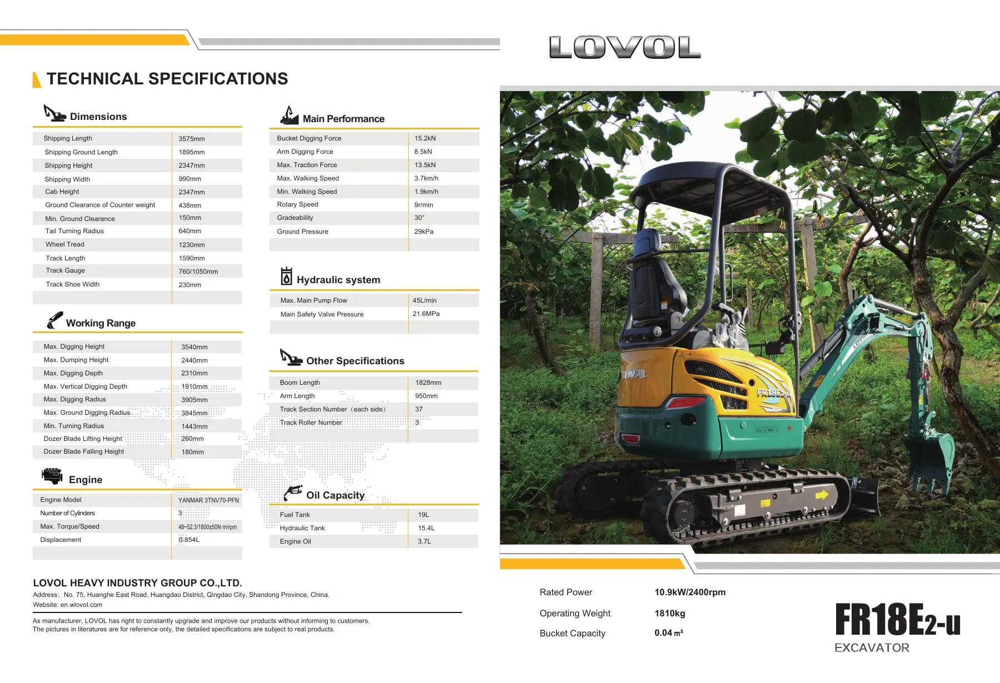
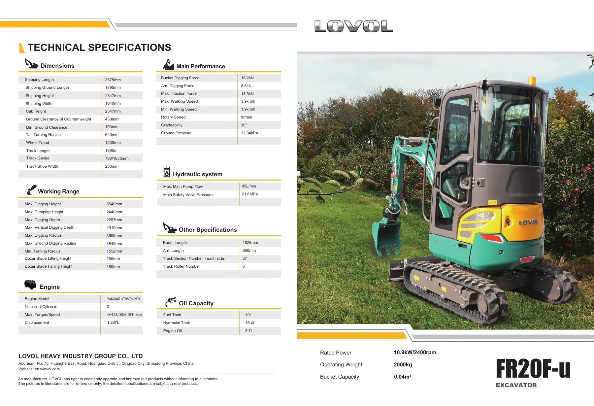
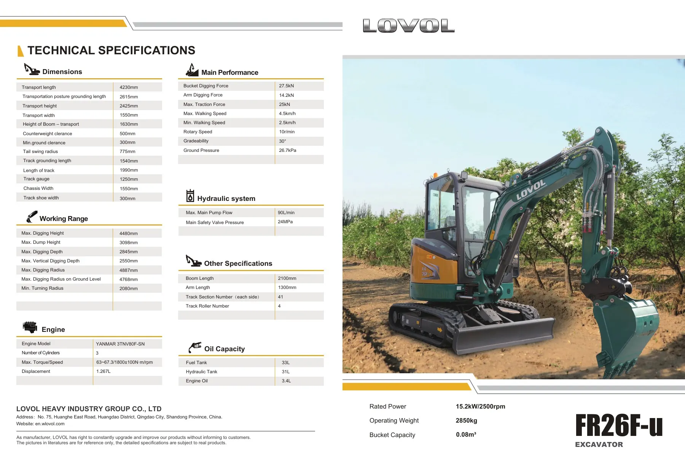
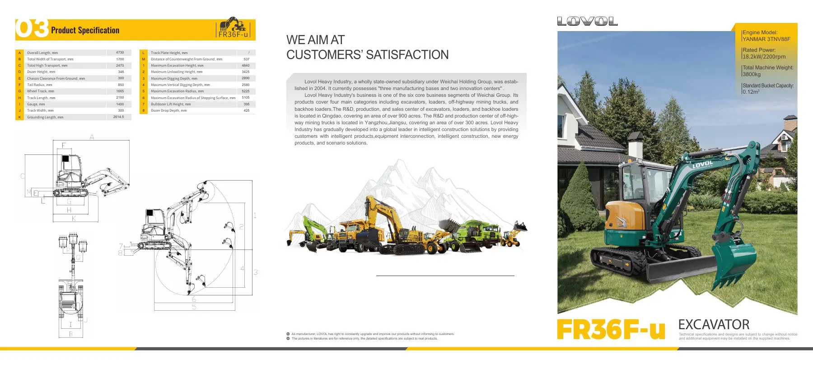
ממחפרים קומפקטיים במשקל 5.7–6 טון ועד מחפר חשמלי כבד לעבודות תשתית, אבן ועפר.


היצרן מציין שמידות, משקלים וקיבולות הם ערכי תכנון נומינליים ועשויים לסטות בשיעור של עד 5%.


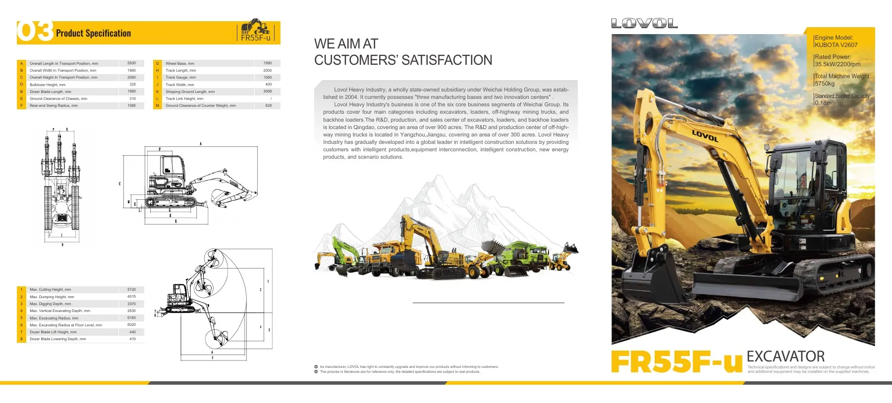
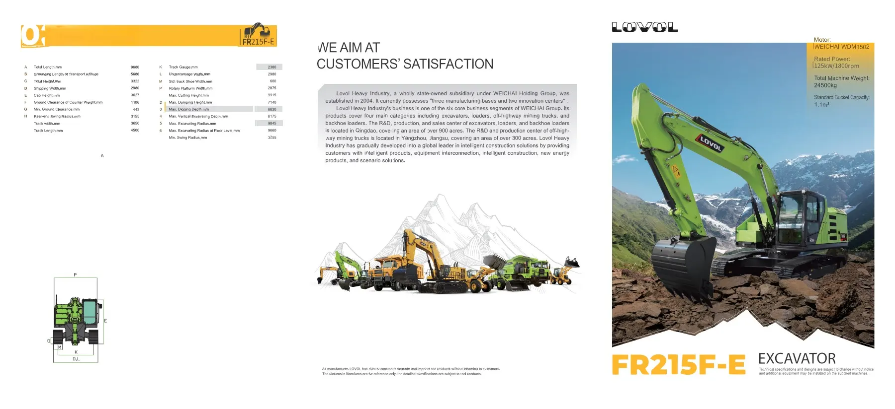

דגמי דיזל וחשמל להעמסה, מחצבות, תשתיות, אתרי עבודה ומערכים תפעוליים.
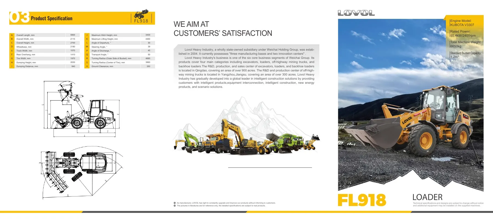
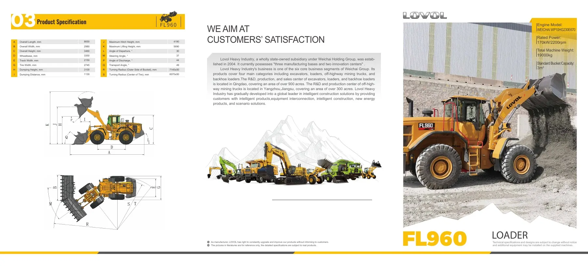
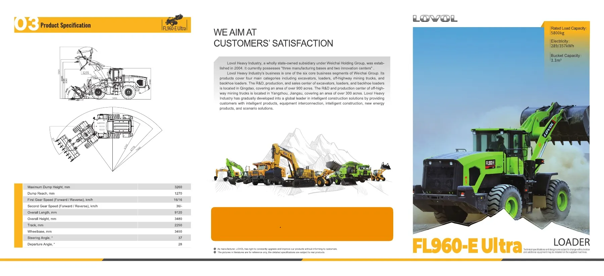
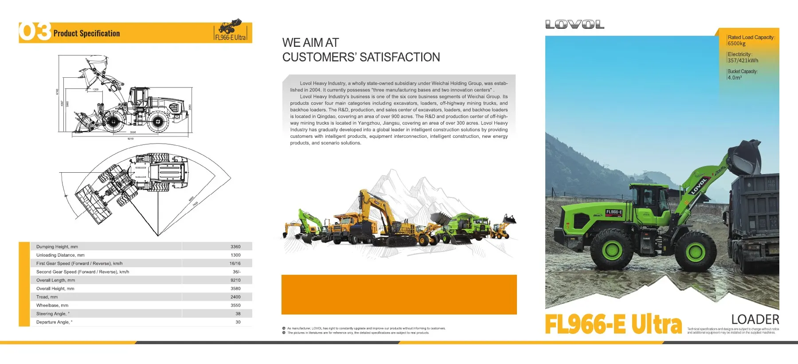
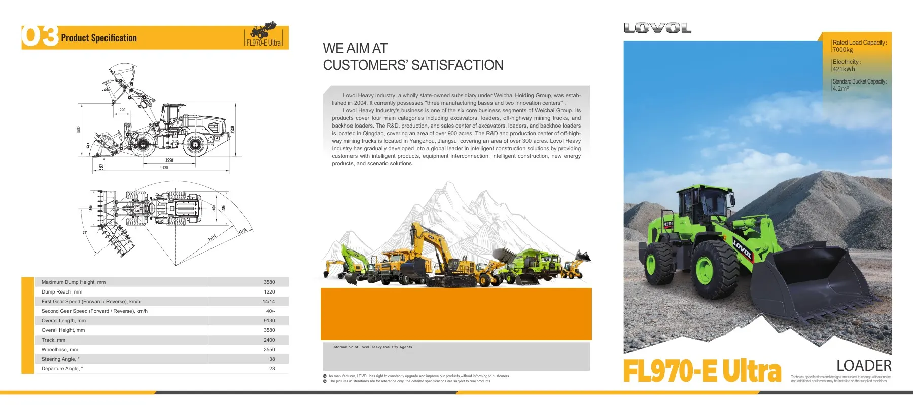